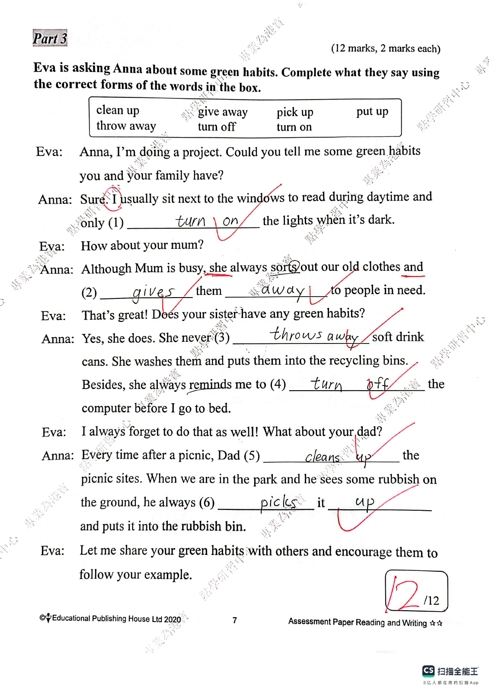
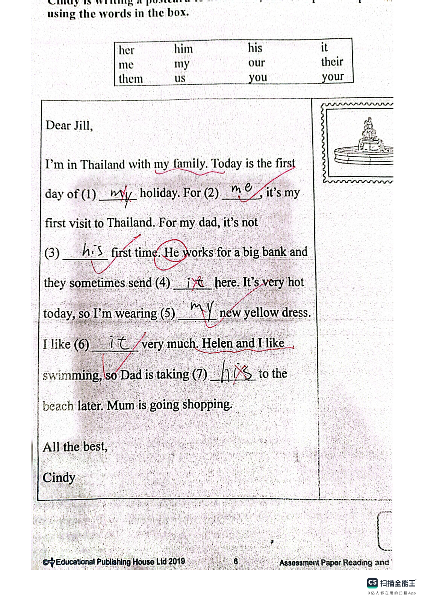

Answer: (a) shopping mall; (b) football court; (c) 13 km; (d) 9 km
已掌握
| # | 单词/词组 | 中文意思 | 例句/说明 | 已掌握 |
|---|---|---|---|---|
| noun 名词 | ||||
| 1 | sign | 标志 | Read the sign carefully. | |
| 2 | history | 历史 | I like learning about history. | |
| 3 | painting | 绘画 | This painting is beautiful. | |
| 4 | cinema | 电影院 | We watch films at the cinema. | |
| 5 | robot | 机器人 | The robot can move. | |
| 6 | meat | 肉类 | I eat meat for dinner. | |
| 7 | breakfast | 早餐 | I eat breakfast at seven. | |
| verb 动词 | ||||
| 8 | wake up | 醒来 | I wake up at seven every morning. | |
| 9 | learn | 学习 | We learn new words every day. | |
| 10 | celebrate | 庆祝 | We celebrate my birthday. | |
| 11 | cover | 遮盖 | Please cover the bowl with a lid. | |
| phrase 短语 | ||||
| 12 | turn right | 右转 | Turn right after the shop. | |
| 13 | dry the clothes | 晾衣服 | We dry the clothes on the washing line. | |
| 14 | school bus | 校车 | We take the school bus every morning. | |
| noun phrase 名词短语 | ||||
| 15 | school uniform | 学校制服 | We wear school uniforms at school. | |
| 16 | basketball court | 篮球场 | We play on the basketball court. | |
| adjective 形容词 | ||||
| 17 | thirsty | 口渴的 | I am thirsty after running. | |
| 18 | amazing | 令人惊叹的；很棒的 | We watched an amazing magic show. | |
| modal verb 情态动词 | ||||
| 19 | mustn't | 禁止；不准 | You mustn't run in the classroom. | |
| verb/noun 动词/名词 | ||||
| 20 | travel | 旅行 | We travel during the holiday. | |
| # | 单词/词组 | 中文意思 | 例句/说明 | 已掌握 |
|---|---|---|---|---|
| adjective 形容词 | ||||
| 1 | enormous | 巨大的 | The elephant is enormous. | |
| 2 | excellent | 优秀 | Your work is excellent. | |
| 3 | round | 圆的 | The ball is round. | |
| 4 | different | 不同的 | Our bags are different colours. | |
| 5 | careless | 粗心的；不小心的 | A careless mouse ran across the lion's paw. | |
| 6 | festive | 节日的 | They can also try different festive food such as turkey and Christmas pudding. | |
| noun 名词 | ||||
| 7 | webpage | 网页 | This webpage has many pictures. | |
| 8 | stationery | 文具 | I put my stationery in my bag. | |
| 9 | slide | 滑梯 | The child goes down the slide. | |
| 10 | pair | 一双；一对 | I need a pair of socks. | |
| 11 | venue | 地点 | The venue is near our school. | |
| 12 | stadium | 体育场 | The game is in the stadium. | |
| 13 | guitar | 吉他 | She plays the guitar. | |
| 14 | assessment | 测试 | We have a maths assessment on Friday. | |
| 15 | garlic | 大蒜 | I like vegetables with garlic. | |
| 16 | nurse | 护士 | He's a nurse. | |
| 17 | habit | 习惯 | Cindy is asking her friend, Alex, about his habits. | |
| 18 | hen | 母鸡 | The hen laid an egg this morning. | |
| 19 | stocking | 圣诞袜 | We also like to hang up Christmas stockings on our bedroom doors. | |
| 20 | preparation | 准备 | We help with the preparation for the party. | |
| noun phrase 名词短语 | ||||
| 21 | a carrot | 胡萝卜 | I put a carrot in the soup. | |
| 22 | an onion | 洋葱 | We need an onion for the soup. | |
| 23 | lion dances | 舞狮 | I like lion dances and kung fu. | |
| verb 动词 | ||||
| 24 | brush | 刷（毛），梳 | I brush my dog's fur every day. | |
| preposition 介词 | ||||
| 25 | behind | 在后面 | The cat is behind the box. | |
| verb phrase 动词短语 | ||||
| 26 | get presents | 收礼物 | Children get presents at Christmas. | |
| 27 | blow out the candles | 吹蜡烛 | I blow out the candles on my birthday cake. | |
| 28 | waste food | 浪费食物 | I don't want to waste food anymore. | |
| 29 | be afraid of | 害怕…… | You do not need to be afraid of this small dog. | |
| number 数词 | ||||
| 30 | million | 一百万 | One million is 1,000,000. | |
| # | 单词/词组 | 中文意思 | 例句/说明 | 已掌握 |
|---|---|---|---|---|
| time/date 时间日期 | ||||
| 1 | October | 十月 | October is the tenth month. | |
| time unit 时间单位 | ||||
| 2 | day | 日 | A day has 24 hours. | |
| 3 | hour | 时 | An hour has 60 minutes. | |
| numbers 数字 | ||||
| 4 | six | 6 | Six is 6. | |
| 5 | ten | 10 | Ten is 10. | |
| 6 | eleven | 11 | Eleven is 11. | |
| 7 | thirteen | 13 | Thirteen is 13. | |
| 8 | seventeen | 17 | Seventeen is 17. | |
| solid shape 立体图形 | ||||
| 9 | pentagonal pyramid | 五棱锥 | A pentagonal pyramid has one pentagonal base and five triangular side faces. | |
| 10 | cylinder | 圆柱 | A cylinder has two circular faces. | |
| 11 | face | 面 | A cube has six faces. | |
| 12 | lateral face | 侧面 | A lateral face is on the side. | |
| 13 | curved face | 曲面 | A cylinder has a curved face. | |
| plane shape 平面图形 | ||||
| 14 | rectangle | 长方形 | A rectangle has four right angles. | |
| geometry 几何 | ||||
| 15 | acute angle | 锐角 | An acute angle is smaller than a right angle. | |
| # | 单词/词组 | 中文意思 | 例句/说明 | 已掌握 |
|---|---|---|---|---|
| numbers 数字 | ||||
| 1 | 3-digit number | 三位数 | A 3-digit number has three digits. | |
| geometry 几何 | ||||
| 2 | angle | 角 | An angle is formed by two rays with the same endpoint. | |
| 3 | perpendicular line | 垂直线 | Perpendicular lines meet at a right angle. | |
| 4 | obtuse angle | 钝角 | An obtuse angle is greater than 90 degrees and less than 180 degrees. | |
| 5 | grid | 网格 | A grid helps us find positions. | |
| 6 | line segment | 线段 | Draw a line segment. | |
| question word 题目词 | ||||
| 7 | compare | 比较 | We compare two numbers. | |
| 8 | count | 数数 | Count from 1 to 10. | |
| 9 | backwards | 向后；倒着 | Count backwards from 20. | |
| 10 | match | 匹配 | Match the number to the word. | |
| 11 | respectively | 分别地 | Tom and Ben have 2 and 3 books respectively. | |
| comparison 比较 | ||||
| 12 | fewest | 最少的 | Which group has the fewest? | |
| 13 | shortest | 最短的 | Find the shortest line. | |
| 14 | lighter | 更轻的 | A pencil is lighter than a brick. | |
| time/date 时间日期 | ||||
| 15 | common year | 平年 | A common year has 365 days. | |
| 16 | large division | 大格（钟面上相邻两个小时数字之间的一格） | The hour hand moves one large division in one hour. | |
| operations calculation 运算 | ||||
| 17 | expression | 式子 | Write the expression in horizontal form. | |
| 18 | equally | 平均地；均等地 | Share the apples equally. | |
| 19 | quotient | 商 | The quotient is the answer in division. | |
| 20 | remainder | 余数 | The remainder is left after division. | |
| 21 | divide A by B | A 除以 B | Divide A by B. | |
| teacher math vocabulary 老师数学词汇 | ||||
| 22 | between ... and ... | 在……和……之间 | 7 is between 6 and 8. | |
| currency money 货币 | ||||
| 23 | pay for | 支付 | I pay for the book. | |
| 24 | expensive | 昂贵的 | This toy costs $50. It is more expensive than the $20 toy. | |
| measurement 测量 | ||||
| 25 | measure | 测量 | We measure the length with a ruler. | |
| 26 | distance | 距离 | Find the distance between the two points. | |
| 27 | millimeter | 毫米 | One millimeter is one tenth of a centimeter. | |
| 28 | balance | 天平 | We use a balance to compare the weights of two objects. | |
| 29 | width | 宽度 | The rectangle has a length of 8 cm and a width of 5 cm. | |
| geometry tool 几何工具 | ||||
| 30 | set square | 三角尺 | A set square helps us draw angles. | |

